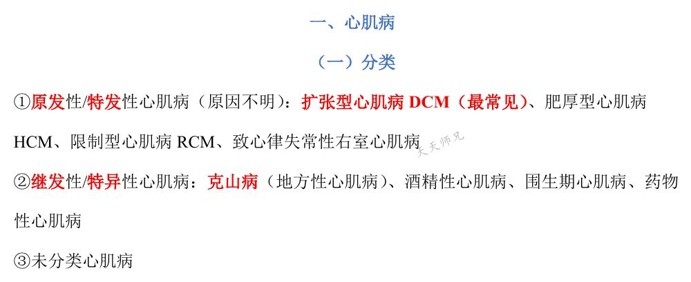
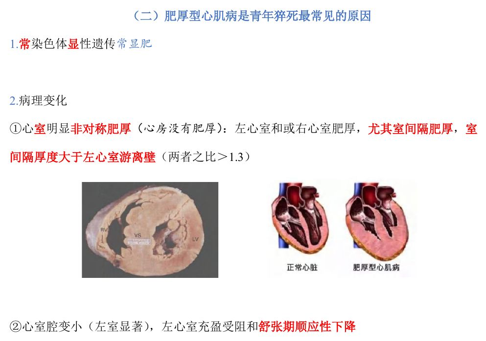
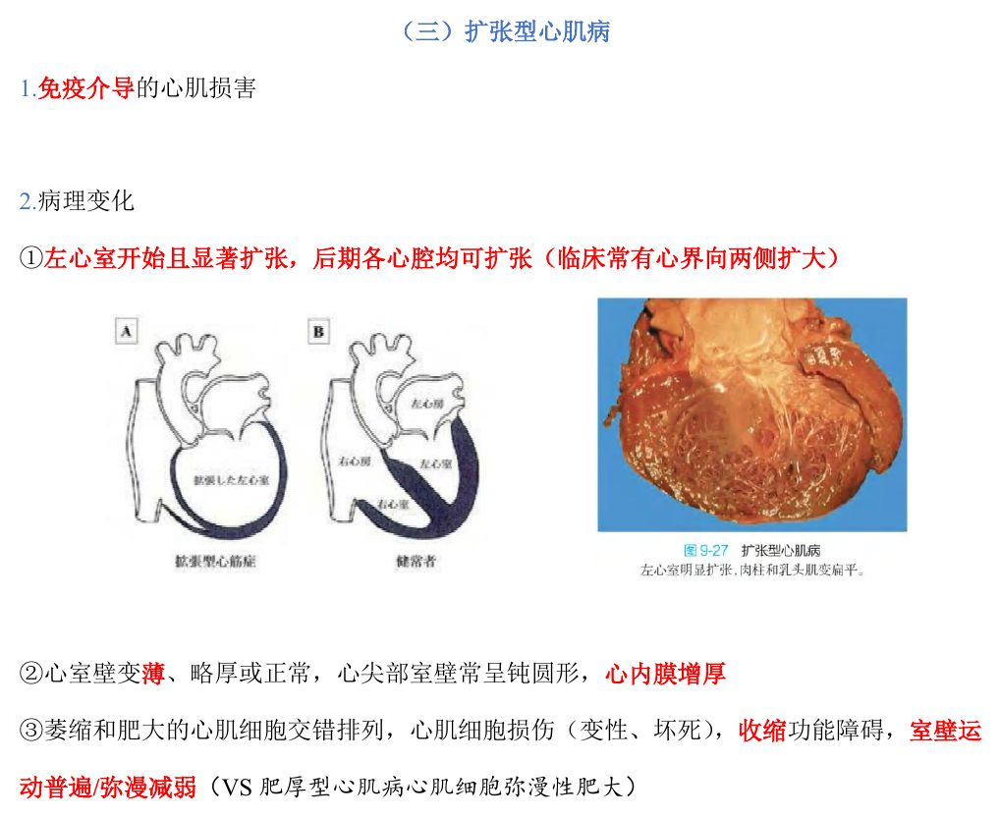
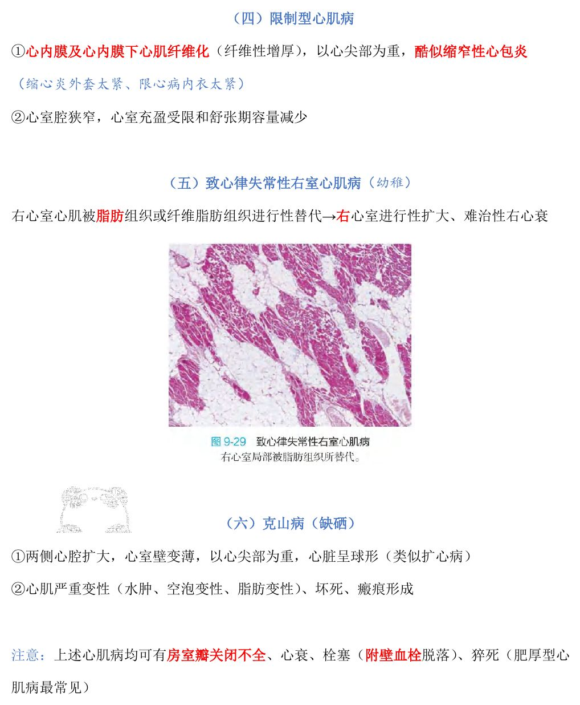
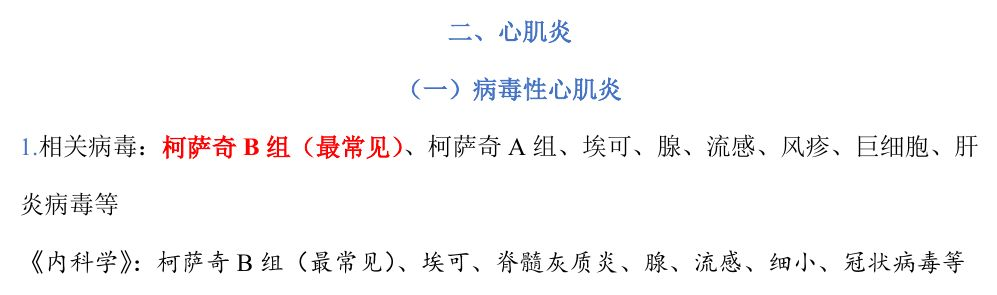
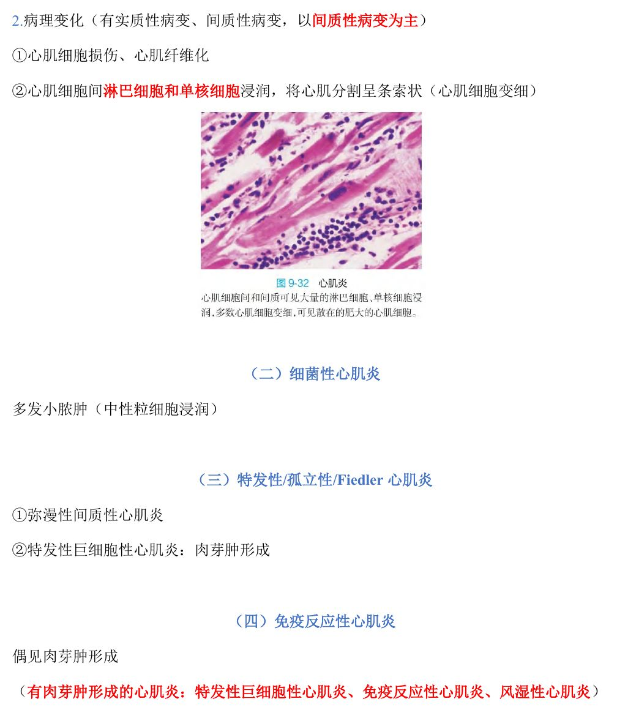
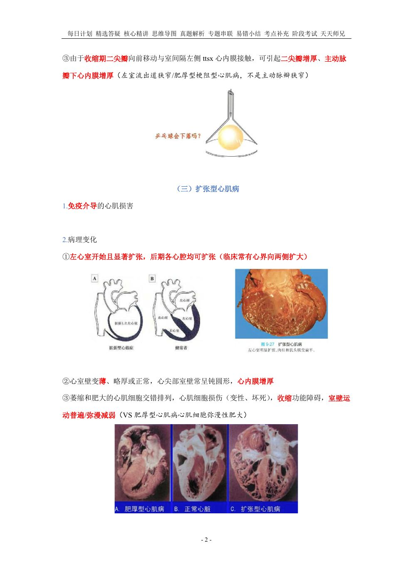
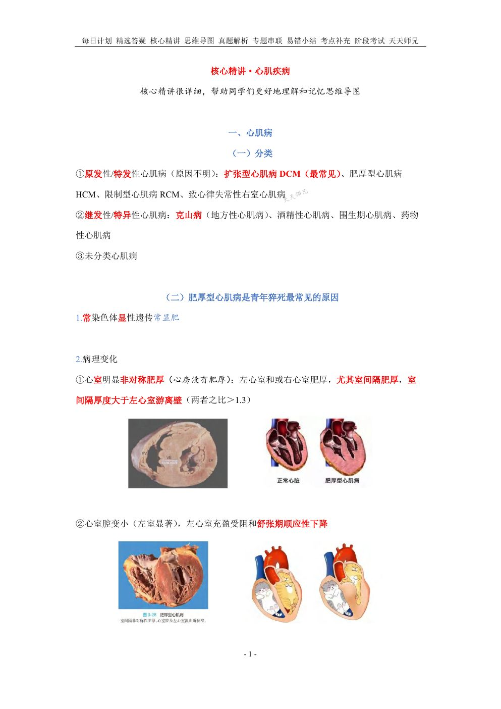
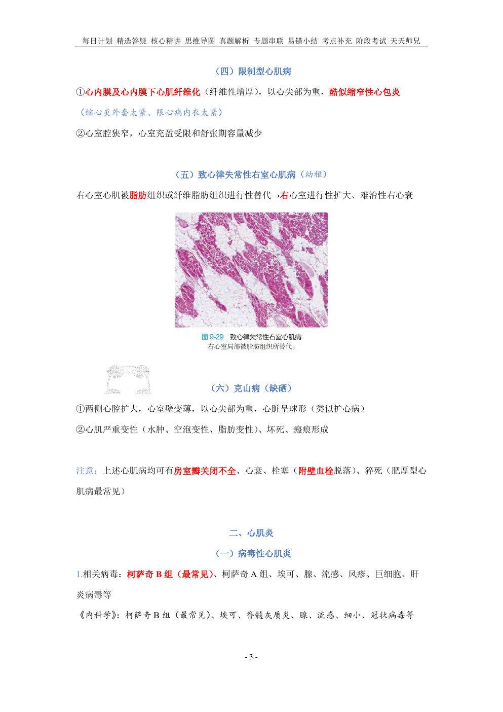
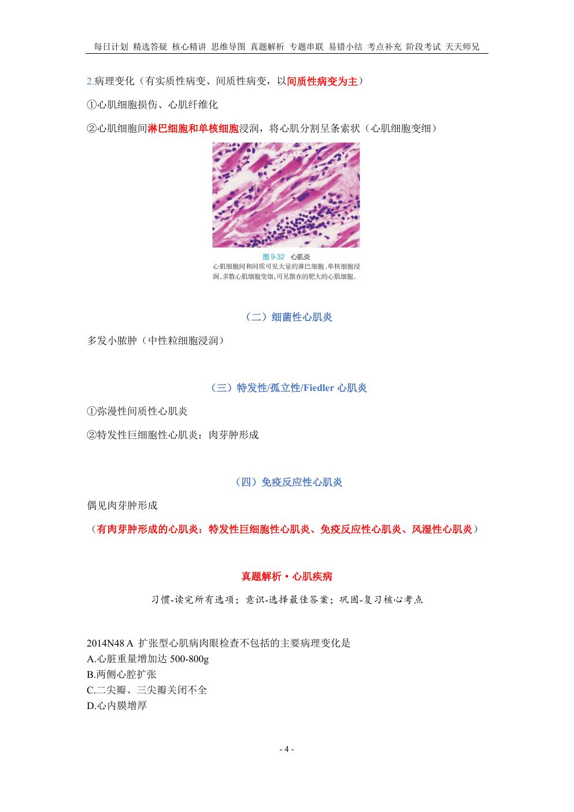

用法：A型题点选项即判；X型题先多选、再点【判卷】；答完自动展开解析。刷完本课再过一遍底部【本课速记卡】，效果最好。
一、心肌病12 题
A型·单选Q1P1 · 分类
原发性心肌病中最常见的是
答案与解析
答案：A
原发性/特发性心肌病：扩张型（最常见）、肥厚型、限制型、致心律失常性右室心肌病。
📖 讲义定位：P1 · 分类

📷 讲义原图 · P1 · 分类
A型·单选Q2P1 · 肥厚型
青年猝死最常见的原因是
答案与解析
答案：C
肥厚型心肌病是青年猝死最常见的原因。
📖 讲义定位：P1 · 肥厚型
A型·单选Q3P1 · 肥厚型
肥厚型心肌病的遗传方式多为
答案与解析
答案：B
常染色体显性遗传（讲义记法：『常显肥』）。
📖 讲义定位：P1 · 肥厚型

📷 讲义原图 · P1 · 肥厚型
A型·单选Q4P1 · 肥厚型
肥厚型心肌病的特征性形态改变是
答案与解析
答案：D
心室明显非对称肥厚（心房没有肥厚），尤其室间隔肥厚：室间隔厚度大于左心室游离壁（两者之比＞1.3）；心室腔变小。
📖 讲义定位：P1 · 肥厚型
X型·多选Q5P1 · 肥厚型
肥厚型心肌病肉眼可见的变化有
答案与解析
答案：ACD
B 错：肥厚型心肌病为心室肥厚、心房没有肥厚；因收缩期二尖瓣前移接触室间隔，可引起二尖瓣增厚、主动脉瓣下心内膜增厚。
📖 讲义定位：P1 · 肥厚型
A型·单选Q6P2 · 肥厚型
肥厚型梗阻型心肌病左室流出道狭窄的主要原因是
答案与解析
答案：C
左室流出道狭窄/肥厚型梗阻型——注意不是主动脉瓣狭窄。
📖 讲义定位：P2 · 肥厚型
A型·单选Q7P2 · 扩张型
扩张型心肌病的病理特点是
答案与解析
答案：A
DCM：左心室开始且显著扩张（后期各心腔均可扩张）；心室壁变薄、略厚或正常；心尖部室壁常呈钝圆形、心内膜增厚；免疫介导的心肌损害。
📖 讲义定位：P2 · 扩张型

📷 讲义原图 · P2 · 扩张型
A型·单选Q8P2 · 扩张型
与扩张型心肌病相比，肥厚型心肌病心肌细胞改变的特点是
答案与解析
答案：B
DCM：萎缩和肥大心肌细胞交错排列、室壁运动普遍/弥漫减弱；HCM：心肌细胞弥漫性肥大。
📖 讲义定位：P2 · 扩张型
A型·单选Q9P3 · 限制型
限制型心肌病的典型改变是
答案与解析
答案：D
RCM：心内膜及心内膜下心肌纤维性增厚、心室腔狭窄、充盈受限（『缩心炎外套太紧、限心病内衣太紧』）。
📖 讲义定位：P3 · 限制型

📷 讲义原图 · P3 · 限制型
A型·单选Q10P3 · ARVC
致心律失常性右室心肌病的特点是
答案与解析
答案：B
→右心室进行性扩大、难治性右心衰。
📖 讲义定位：P3 · ARVC
A型·单选Q11P3 · 克山病
克山病的特点是
答案与解析
答案：D
克山病＝地方性心肌病（缺硒），类似扩心病表现；心肌严重变性（水肿、空泡变、脂肪变）、坏死、瘢痕形成。
📖 讲义定位：P3 · 克山病
X型·多选Q12P1–3 · 小结
关于心肌病，下列叙述正确的有
答案与解析
答案：BCD
A 错：克山病心室壁变薄。心肌病均可有房室瓣关闭不全、心衰、栓塞（附壁血栓脱落）、猝死（肥厚型最常见）。
📖 讲义定位：P1–3 · 小结
二、心肌炎7 题
A型·单选Q13P3 · 病毒性心肌炎
病毒性心肌炎最常见的病毒是
答案与解析
答案：C
柯萨奇 B 组最常见（另有柯萨奇 A 组、埃可、腺、流感、风疹、巨细胞、肝炎病毒等）。
📖 讲义定位：P3 · 病毒性心肌炎

📷 讲义原图 · P3 · 病毒性心肌炎
A型·单选Q14P4 · 病毒性心肌炎
病毒性心肌炎的病变特点是
答案与解析
答案：A
有实质性病变、间质性病变，以间质性病变为主。
📖 讲义定位：P4 · 病毒性心肌炎

📷 讲义原图 · P4 · 病毒性心肌炎
A型·单选Q15P4 · 病毒性心肌炎
病毒性心肌炎时心肌间的浸润细胞主要是
答案与解析
答案：C
心肌细胞间淋巴细胞和单核细胞浸润，将心肌分割呈条索状（心肌细胞变细）；伴心肌细胞损伤、心肌纤维化。
📖 讲义定位：P4 · 病毒性心肌炎
A型·单选Q16P4 · 细菌性心肌炎
细菌性心肌炎的特点是
答案与解析
答案：B
细菌性心肌炎：多发小脓肿（中性粒细胞浸润）。
📖 讲义定位：P4 · 细菌性心肌炎
A型·单选Q17P4 · 特发性
特发性/孤立性/Fiedler 心肌炎属于
答案与解析
答案：D
特发性＝弥漫性间质性心肌炎；特发性巨细胞性心肌炎可见肉芽肿形成。
📖 讲义定位：P4 · 特发性
X型·多选Q18P4 · 小结
有肉芽肿形成的心肌炎包括
答案与解析
答案：ACD
B 错：病毒性心肌炎无肉芽肿形成。有肉芽肿的心肌炎：特发性巨细胞性、免疫反应性、风湿性。
📖 讲义定位：P4 · 小结
X型·多选Q19P3–4 · 病毒性心肌炎
关于病毒性心肌炎，下列叙述正确的有
答案与解析
答案：BCD
A 错：多发小脓肿是细菌性心肌炎的特点。
📖 讲义定位：P3–4 · 病毒性心肌炎
本课速记卡
心肌病：四种对比
| 类型 | 要点 |
|---|
| 扩张型 DCM（最常见） | 左心室开始显著扩张→各心腔；壁薄/正常；萎缩与肥大心肌交错；免疫介导 |
| 肥厚型 HCM | 青年猝死最常见；常显遗传；室间隔非对称肥厚（室间隔/左室游离壁＞1.3）；左室流出道狭窄 |
| 限制型 RCM | 心内膜及心内膜下纤维化（心尖重）→充盈受限；酷似缩窄性心包炎 |
| 致心律失常性右室 | 右室心肌被脂肪/纤维脂肪组织替代→难治性右心衰 |
心肌病补充
- 克山病：地方性（缺硒）；两心腔扩大、壁变薄、心尖重、球形（类扩心病）；心肌变性、坏死、瘢痕
- 共同点：房室瓣关闭不全、心衰、栓塞（附壁血栓）、猝死（肥厚型最常见）
心肌炎
- 病毒性（柯萨奇 B 组最常见）：间质性为主；淋巴＋单核细胞浸润，心肌呈条索状
- 细菌性：多发小脓肿（中性粒细胞）
- 特发性/Fiedler：弥漫性间质性；特发性巨细胞性→肉芽肿
- 有肉芽肿的心肌炎：特发性巨细胞性、免疫反应性、风湿性
📚 网站题库（导入）4 组 · 6 题
说明：本部分为外部题库导入（来源：「西综题库」网站 · 病理学），题干、选项与答案保留原样；标注「教师补充」的答案未经讲义逐项复核。做题方式：点字母选择（多选后点【判卷】；答案可点开「答案与出处」查看）。
肥厚型心肌病B型题
A 常染色体显性遗传
B 心界向两侧扩大
C 心内膜及心内膜下心肌纤维化，以心尖部为重
D 心室明显非对称性肥厚，尤其室间隔；室间隔厚度大于左心室游离壁
E 免疫介导的心肌损害
F 心室腔狭窄，心室充盈受限，舒张期容量减少
G 室壁运动普遍减弱
H 心室腔变小，左心室充盈受阻，舒张期顺应性下降
I 开始左心室显著扩张，后期各心腔均扩张
J 收缩期二尖瓣向前移动
K 心室壁薄、略厚或正常，心尖部钝圆形，心内膜增厚
L 二尖瓣增厚，主动脉瓣下心内膜增厚
M 萎缩和肥大的心肌细胞交错排列，心肌细胞损伤，收缩功能障碍
N 青壮年猝死最常见的原因
网站题W1第10讲 · 第2页
扩张型心肌病
答案与出处
答案：BEGIKM
📖 第10讲 · 第2页

📷 讲义原图 · 第10讲 · 第2页
网站题W2第10讲 · 第1页
肥厚型心肌病
答案与出处
答案：ADHJLN
📖 第10讲 · 第1页

📷 讲义原图 · 第10讲 · 第1页
网站题W3第10讲 · 第3页
限制型心肌病
答案与出处
答案：CF
📖 第10讲 · 第3页

📷 讲义原图 · 第10讲 · 第3页
心肌梗死的室壁瘤最多见的部位在单项选择教师补充
A 左心室前壁
B 左心室侧壁
C 左心室后壁
D 右心室
网站题W4
心肌梗死的室壁瘤最多见的部位在(单选)
答案与出处
在心肌间质中有大量淋巴细胞、单核细胞浸润,首先考虑的诊断是单项选择教师补充
A 病毒性心肌炎
B 细菌性心肌炎
C 风湿性心肌炎
D 孤立性心肌炎
网站题W5第10讲 · 第4页
在心肌间质中有大量淋巴细胞、单核细胞浸润,首先考虑的诊断是(单选)
答案与出处
答案：A
📖 第10讲 · 第4页

📷 讲义原图 · 第10讲 · 第4页
肥厚型心肌病的病变特点是单项选择教师补充
A 心肌细胞弥漫性肥大、走行紊乱
B 心肌细胞不均匀肥大,心肌间质纤维化
C 心肌细胞严重变性、坏死
D 心内膜纤维化、钙化,附壁血栓形成
网站题W6第10讲 · 第2页
肥厚型心肌病的病变特点是(单选)
答案与出处